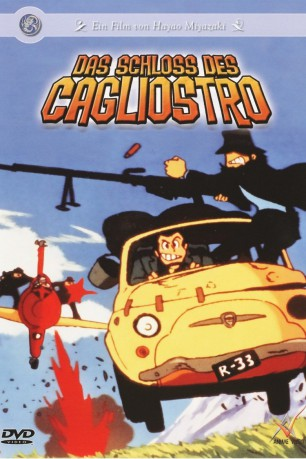

#6028 Lupin III Das Schloss des Cagliostro - Hardyman räumt auf
Alternativ: The Castle of Cagliostro (Englischer Titel)
 
 IMDB-Wertung: 7.8 / 10
IMDB-Wertung: 7.8 / 10  Metascore: 0
Metascore: 0 
Lupin und sein Partner Jigen fahren gemütlich eine Straße entlang, als sie mitbekommen, wie eine Frau von zwielichtigen Typen verfolgt wird. Lupin rettet die Frau namens Clarisse und verliebt sich sofort in sie, doch kaum ist sie gerettet, ist sie schon wieder weg. Die Spur führt zu einem gewissen Graf Cagliostro, der Clarisse zur Heirat zwingen will, um an einen sagenumwobenen Schatz zu gelangen.
Jahr: 1979
Dauer: 99 Minuten
FSK: 6
Land: Japan Studio: Anime VirtualTonspuren: DTS - ,
Untertitel: Deutsch,
Auflösung: 1080p (1920x1080) Größe: 6717 MB
Genre: Abenteuer, Fantasy, Krimi, Animation/Trick, Familie
Regisseur: Hayao Miyazaki
Drehbuch: Stanley Kubrick
Soundtrack:
Darsteller:
 Bob Bergen als Wolf, Streamline dub / Fake Ring, Streamline dub
Bob Bergen als Wolf, Streamline dub / Fake Ring, Streamline dub Michael McConnohie als Count Cagliostro, Streamline dub
Michael McConnohie als Count Cagliostro, Streamline dub- David Povall als Inspector Keibu Zenigata, Streamline dub
- J.C. Henning als Clarisse, Streamline dub
- Juliana Donald als Waitress, Streamline dub
 Barbara Goodson als Young Clarisse, Streamline dub / Woman Playing Cards, Streamline dub
Barbara Goodson als Young Clarisse, Streamline dub / Woman Playing Cards, Streamline dub Stephen Apostolina als Interpol Officer, Streamline dub / Archbishop's driver, Streamline dub
Stephen Apostolina als Interpol Officer, Streamline dub / Archbishop's driver, Streamline dub William Bassett als Counterfeiter, Manga Video dub / Whispering Councilman, Manga Video dub
William Bassett als Counterfeiter, Manga Video dub / Whispering Councilman, Manga Video dub Richard Miro als (Manga Video dub
Richard Miro als (Manga Video dub Kevin Brief als (Manga Video dub
Kevin Brief als (Manga Video dub- Keith Diamond als (Manga Video dub
 John Snyder als Daisuke Jigen, Manga Video dub
John Snyder als Daisuke Jigen, Manga Video dub- Jeff Nimoy als Archbishop's Driver, Manga Video dub / Italian Delegate, Manga Video dub / Restaurant Patron, Manga Video dub
 Beau Billingslea als Casino Police, Manga Video dub
Beau Billingslea als Casino Police, Manga Video dub- Adam Sholder als (Manga Video dub
 Michael Forest als Archbishop, Manga Video dub
Michael Forest als Archbishop, Manga Video dub- David Hayter als Arsene Lupin III, Manga Video dub
 Richard Epcar als Goemon Ishikawa XIII, Manga Video dub , uncredited
Richard Epcar als Goemon Ishikawa XIII, Manga Video dub , uncredited Michael Gregory als Goemon Ishikawa XIII, Manga Video dub , uncredited
Michael Gregory als Goemon Ishikawa XIII, Manga Video dub , uncredited- Yasuo Yamada als Arsène Lupin III
- Eiko Masuyama als Fujiko Mine
- Kiyoshi Kobayashi als Daisuke Jigen
- Makio Inoue als Goemon Ishikawa XIII
- Gorô Naya als Inspector Kôichi Zenigata
 Sumi Shimamoto als Lady Clarisse d' Cagliostro
Sumi Shimamoto als Lady Clarisse d' Cagliostro- Tarô Ishida als Count Lazare d' Cagliostro
- Kôhei Miyauchi als Gardener
- Ichirô Nagai als Jodo
- Tadamichi Tsuneizumi als Gustav
- Kinpei Azusa als Archbishop
- Shôzô Hirabayashi als Interpol Secretary General
- Mikio Terashima als West German Delegate
- Akio Nojima als Japanese Delegate
- Minoru Midorikawa als Servant
- Osamu Saka als British Delegate
- Junkichi Kamada als Soviet Delegate
- Masayuki Katô als Printing Chief
- Eken Mine als Archbishop's Driver / Riot Squad Member / Drunk Tourist
- Juji Matsuda als Saitama Police Riot Squad Leader
- Yôko Yamaoka als Waitress
 Steve Bulen als Jigen, Streamline dub / Italian Councilman, Streamline dub / Mustached Councilman, Streamline dub
Steve Bulen als Jigen, Streamline dub / Italian Councilman, Streamline dub / Mustached Councilman, Streamline dub Edie Mirman als Fujiko, Streamline dub
Edie Mirman als Fujiko, Streamline dub- Jeff Winkless als Jodo, Streamline dub / Interpol Chair, Streamline dub
 Kirk Thornton als Gustav, Streamline dub / Archbishop, Streamline dub / Count Cagliostro, Manga Video dub
Kirk Thornton als Gustav, Streamline dub / Archbishop, Streamline dub / Count Cagliostro, Manga Video dub Mike Reynolds als Walter, Streamline dub / German Councilman, Streamline dub
Mike Reynolds als Walter, Streamline dub / German Councilman, Streamline dub Steve Kramer als Goemon, Streamline dub / Servant 1, Streamline dub
Steve Kramer als Goemon, Streamline dub / Servant 1, Streamline dub- Kerrigan Mahan als Cpt. Sam, Streamline dub / French Councilman, Streamline dub / Japanese Councilman, Streamline dub / Goemon's Final Opponent, Streamline dub / Patron, Streamline dub
- Tom Wyner als American Councilman, Streamline dub / Man Playing Cards, Streamline dub / Counterfeiter, Streamline dub / British Councilman, Streamline dub / Russian Councilman, Streamline dub / Mustached Councilman, Manga Video dub
- Tony Clay als American Councilman, Manga Video dub
 Peter Spellos als Interpol Chairman, Manga Video dub
Peter Spellos als Interpol Chairman, Manga Video dub
Datei: X:\Kinder Anime\Div Anime\Lupin III Das Schloss des Cagliostro - Hardyman räumt auf (1979, FSK6, 1920x1080).mkv seit 24.04.2017
Festplatte: Kinder-Filme+Trick
 Es gibt insgesamt 40 Filme in der Gruppe 'Kinder Anime\Div Anime'
Es gibt insgesamt 40 Filme in der Gruppe 'Kinder Anime\Div Anime'